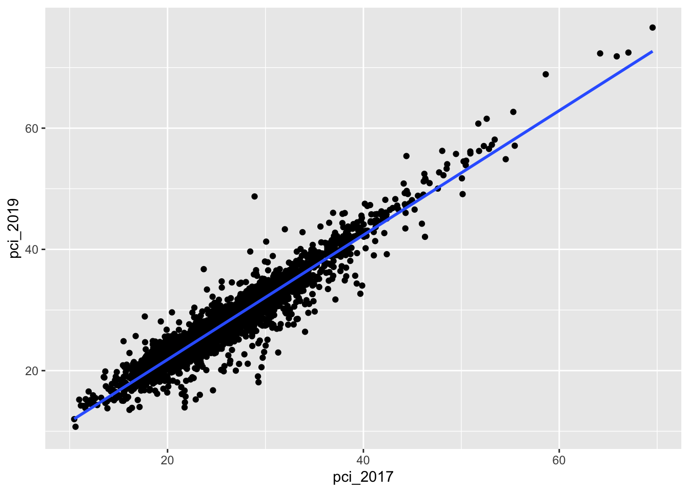
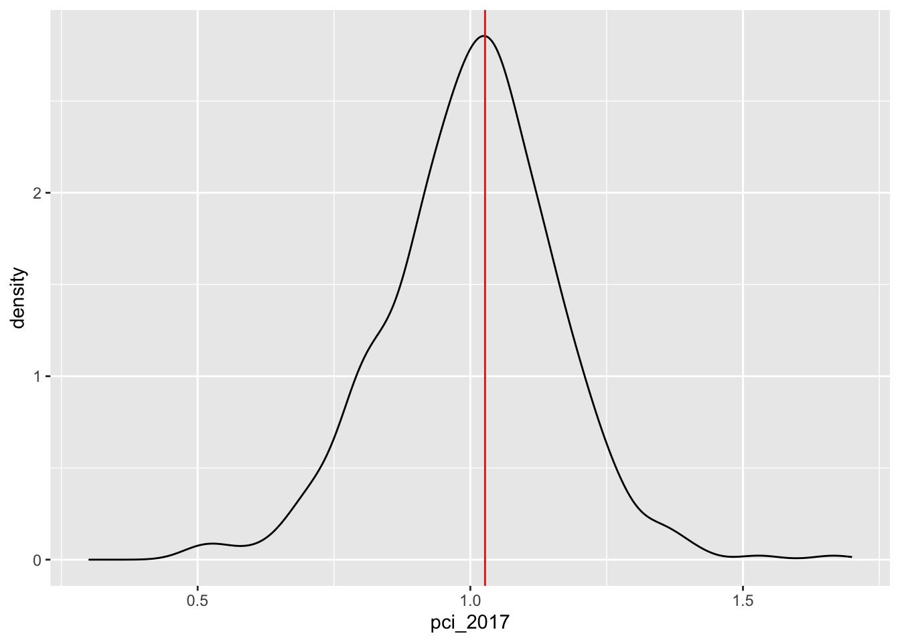

# Model the relationshippop_model <-lm(pci_2019 ~ pci_2017, data = county_clean)coef(summary(pop_model))
Estimate Std. Error t value Pr(>|t|)
(Intercept) 1.293897 0.157901343 8.194339 3.628557e-16
pci_2017 1.026675 0.005883489 174.501046 0.000000e+00
# Plot the relationshipcounty_clean %>%ggplot(aes(y = pci_2019, x = pci_2017)) +geom_point() +geom_smooth(method ="lm", se =FALSE)
`geom_smooth()` using formula = 'y ~ x'
Warning: Removed 2 rows containing non-finite outside the scale range
(`stat_smooth()`).
Warning: Removed 2 rows containing missing values or values outside the scale range
(`geom_point()`).

Now PRETEND we don’t have data on all counties.
Thus we need to estimate the population parameters using sample data.
In the previous activity, each student took 1 sample of 10 counties.
This gave us a quick sense of how these estimates could vary from sample to sample.
But let’s dream bigger.
Let’s each take 500 samples of 10 counties each!
Exercise 1: 500 samples of size 10
Recall that we can sample 10 counties using sample_n():
# Run this chunk a few times to explore the different samples you getcounty_clean %>%sample_n(size =10, replace =FALSE)
We can also take a sample and then use the data to estimate the model:
# Run this chunk a few times to explore the different sample models you getcounty_clean %>%sample_n(size =10, replace =FALSE) %>%with(lm(pci_2019 ~ pci_2017))
We can also take multiple unique samples and build a sample model from each.
The code below obtains 500 separate samples of 10 counties, and stores the model estimates from each:
# Set the seed so that we all get the same resultsset.seed(155)# Store the sample modelssample_models_10 <- mosaic::do(500)*( county_clean %>%sample_n(size =10, replace =FALSE) %>%with(lm(pci_2019 ~ pci_2017)))# Check it outhead(sample_models_10)dim(sample_models_10)
Reflect
What’s the point of the do() function?!? If you’ve taken any COMP classes, what process do you think do() is a shortcut for?
What is stored in the Intercept, pci_2017, and r.squared columns of the results?
Exercise 2: Sampling distribution
Check out the resulting 500 sample models:
county_clean %>%ggplot(aes(x = pci_2017, y = pci_2019)) +geom_smooth(method ="lm", se =FALSE) +geom_abline(data = sample_models_10, aes(intercept = Intercept, slope = pci_2017), color ="gray", size =0.25) +geom_smooth(method ="lm", color ="red", se =FALSE)
Let’s focus on the slopes of these 500 sample models. A plot of the 500 slopes approximates the sampling distribution of the sample slopes.
Reflect: Describe the sampling distribution. What’s its general shape? Where is it centered? Roughly what’s its spread / i.e. what’s the range of estimates you observed?
Exercise 3: Standard error
For a more rigorous assessment of the spread among the sample slopes, let’s calculate their standard deviation:
sample_models_10 %>%summarize(sd(pci_2017))
Recall: The standard deviation of sample estimates is called a “standard error”.
It measures the typical distance of a sample estimate from the actual population value.
Exercise 4: Central Limit Theorem (CLT)
Recall that the CLT assumes that, so long as our sample size is “big enough”, the sampling distribution of the sample slope will be Normal.
Specifically, all possible sample slopes will vary Normally around the population slope.
Do your simulation results support this assumption?
Let \(\hat{\beta}_1\) be an estimate of the population slope parameter \(\beta_1\) calculated from a sample of 10 counties.
In exercise 3, you approximated that \(\hat{\beta}_1\) has a standard error of roughly 0.16.
Thus, by the CLT, the sampling distribution of \(\hat{\beta}_1\) is:
\[\hat{\beta}_1 \sim N(\beta_1, 0.16^2)\]
Use this result with the 68-95-99.7 property of the Normal model to understand the potential error in a slope estimate.
There are many possible samples of 10 counties. What percent of these will produce an estimate \(\hat{\beta}_1\) that’s within 0.32, i.e. 2 standard errors, of the actual population slope \(\beta_1\)?
More than 2 standard errors from \(\beta_1\)?
More than 0.48, i.e. 3 standard errors, above\(\beta_1\)?
Exercise 6: CLT and the 68-95-99.7 Rule
Fill in the blanks below to complete some general properties assumed by the CLT:
___% of samples will produce \(\hat{\beta}_1\) estimates within 1 st. err. of \(\beta_1\)
___% of samples will produce \(\hat{\beta}_1\) estimates within 2 st. err. of \(\beta_1\)
___% of samples will produce \(\hat{\beta}_1\) estimates within 3 st. err. of \(\beta_1\)
Exercise 7: Increasing sample size
Now that we have a sense of the potential variability and error in sample estimates, let’s consider the impact of sample size. Suppose we were to increase our sample size from n = 10 to n = 50 or n = 200 counties. What impact do you anticipate this having on our sample estimates of the population parameters:
Do you expect there to be more or less variability among the sample model lines?
Around what value would you expect the sampling distribution of sample slopes to be centered?
What general shape would you expect that sampling distribution to have?
In comparison to estimates based on the samples of size 10, do you think the estimates based on samples of size 50 will be closer to or farther from the true slope (on average)?
Exercise 8: 500 samples of size n
Let’s increase the sample size in our simulation. Fill in the blanks to take 500 samples of size 50, and build a sample model from each.
Compare and contrast the 500 sets of sample models when using samples of size 10, 50, and 200.
# 500 sample models using samples of size 10county_clean %>%ggplot(aes(x = pci_2017, y = pci_2019)) +geom_smooth(method ="lm", se =FALSE) +geom_abline(data = sample_models_10, aes(intercept = Intercept, slope = pci_2017), color ="gray", size =0.25) +geom_smooth(method ="lm", color ="red", se =FALSE)
# 500 sample models using samples of size 50county_clean %>%ggplot(aes(x = pci_2017, y = pci_2019)) +geom_smooth(method ="lm", se =FALSE) +geom_abline(data = sample_models_50, aes(intercept = Intercept, slope = pci_2017), color ="gray", size =0.25) +geom_smooth(method ="lm", color ="red", se =FALSE)
# 500 sample models using samples of size 200county_clean %>%ggplot(aes(x = pci_2017, y = pci_2019)) +geom_smooth(method ="lm", se =FALSE) +geom_abline(data = sample_models_200, aes(intercept = Intercept, slope = pci_2017), color ="gray", size =0.25) +geom_smooth(method ="lm", color ="red", se =FALSE)
Reflect: What happens to our sample models as sample size increases? Was this what you expected?
Exercise 10: Impact of sample size (part II)
Let’s focus on just the sampling distributions of our 500 slope estimates \(\hat{\beta}_1\). For easy comparison, plot the estimates based on samples of size 10, 50, and 200 on the same frame:
# Don't think too hard about this code!# Combine the estimates & sample size into a new data set# Then plot itdata.frame(estimates =c(sample_models_10$pci_2017, sample_models_50$pci_2017, sample_models_200$pci_2017),sample_size =rep(c("10","50","200"), each =500)) %>%mutate(sample_size =fct_relevel(sample_size, c("10", "50", "200"))) %>%ggplot(aes(x = estimates, color = sample_size)) +geom_density() +geom_vline(xintercept =1.027, color ="red", linetype ="dashed") +labs(title ="Sampling distributions of the sample slope")
Reflect: How do the shapes, centers, and spreads of these sampling distributions compare? Was this what you expected?
Exercise 11: Properties of sampling distributions
In light of your observations, complete the following statements about the sampling distribution of the sample slope.
For all sample sizes, the shape of the sampling distribution is roughly ___ and the sampling distribution is roughly centered around ___, the true population slope.
As sample size increases:
The average sample slope estimate INCREASES / DECREASES / IS FAIRLY STABLE.
The standard error of the sample slopes INCREASES / DECREASES / IS FAIRLY STABLE.
Thus, as sample size increases, our sample slopes become MORE RELIABLE / LESS RELIABLE.
Solutions
Exercise 1: 500 samples of size 10
Reflect
do() repeats the code within the parentheses as many times as you tell it. do()` is a shortcut for a for loop.
Warning: Removed 1 row containing non-finite outside the scale range
(`stat_density()`).

The 500 sample slopes are normally distributed around the population slope and range from roughly 0.4 to 1.6.
Exercise 3: Standard error
sample_models_10 %>%summarize(sd(pci_2017))
sd(pci_2017)
1 0.1580363
For example, for samples of size 10, we expect estimates of the sample slope (the expected change in pci_2019 per $1k increase in pci_2017) to be off by 0.16. The standard errors decrease as sample size increases.
Exercise 4: Central Limit Theorem (CLT)
Our simulation results do support the assumption of the Central Limit Theorem.
The sample model lines become less and less variable from sample to sample.
Exercise 10: Impact of sample size (part II)
No matter the sample size, the sample estimates are normally distributed around the population slope. But as sample size increases, the variability of the sample estimates decreases.
Exercise 11: Properties of sampling distributions
For all sample sizes, the shape of the sampling distribution is roughly normal and the sampling distribution is roughly centered around 1.027, the true population slope.
As sample size increases:
The average sample slope estimate IS FAIRLY STABLE.
The standard error of the sample slopes DECREASES / IS FAIRLY STABLE.
Thus, as sample size increases, our sample slopes become MORE RELIABLE.